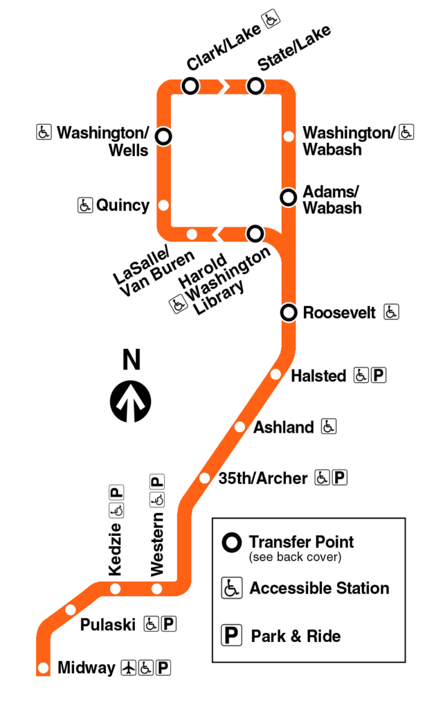
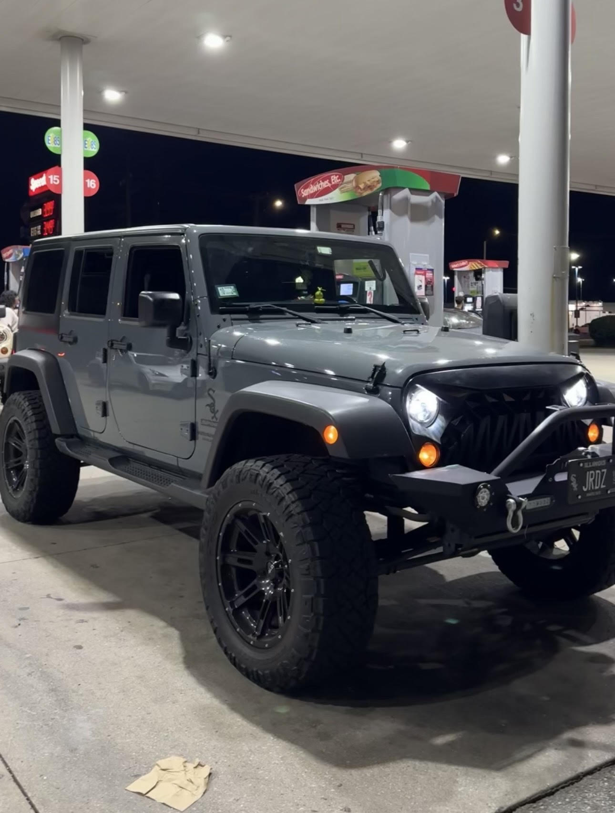

I was born and raised in the southwest side of chicago, for the most part in the Back of The Yards but have recently moved over to the West Lawn area. So I have always grown up around the orange line which is shown in the following image.
I have a strong passion for cars which is the reason why I am now currently working as an auto technician at Best Buy installing all sorts of car electronics. I have had the chance on learning on my own car by upgrading a couple things every now and then which is shown in the picture bellow.
I also really enjoy listening to music throughout the day because it really helps me get stuff done whether it's homework, work, or anything really. My current favorite artist is currently Junior H which is a Mexican Regional artist from Hermosillo, you all can take a listen to one of his older but my favorite songs in the video bellow.